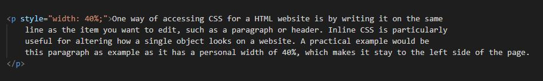

<!DOCTYPE html>
<html lang="en">
<head>
    <link rel="stylesheet" href="mainstyle.css">
    <title>Inline CSS</title>
</head>
</html>

<div class="topnav">
    <a href="index.html"><Main>Home</Main></a>
    <a class="active" href="inlinecss.html">Inline CSS</a>
    <a href="embeddedcss.html">Embedded CSS</a>
    <a href="externalcss.html">External CSS</a>
</div>

<h1>Inline CSS</h1>

<p style="width: 45%;">One way of accessing CSS for a HTML website is by writing it on the same
    line as the item you want to edit, such as a paragraph or header. Inline CSS is particularly 
    useful for altering how a single object looks on a website. A practical example would be
    this paragraph as example as it has a personal width of 40%, which makes it stay to the left side of the page. 
</p>


<div class="gallery">
    <a target="_blank" href="inlinecss.jpg">
        
    </a>
    <div class="desc">Figure 1 - Inline CSS in a paragraph</div>
    <style>
        
        div.desc {
            font-family: 'Lucida Sans', 'Lucida Sans Regular', 'Lucida Grande', 'Lucida Sans Unicode', Geneva, Verdana, sans-serif;
            font-style: oblique;
        }

        div.gallery {
            border: 1px solid #ffffff;
            width: 910px;
            float: right;
            position: relative;
            top: -115px;
            margin: 25px;
        }

    </style>
</div>

<p style="width: 45%;">To declare inline CSS, the style should be declared within the opening
    bracket of the item, whether it be a footer or a paragraph. Figure 1 is an example of me creating
    this for these paragraphs, where I have declared their width as 40%.
</p>

<div class="footer">
    <p>Harvey Shipp | 426573@edu.cwa.ac.uk</p>
</div>
